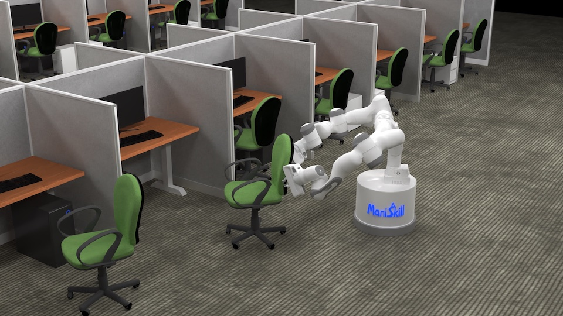
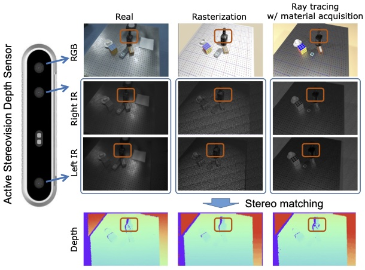

|
Yunhao Fang 方云浩
I am currently working on natural language reasoning and planning for Embodied AI. Email me if you are interested in collaboration!
About me
I am a Master candidate in the Department of Computer Science and Engineering at the University of California San Diego, and I am fortunate to be advised by Prof. Hao Su.
My long-term research goal is to build an embodyAI framework with generalizable perception and compositional skills.
Specifically, I am interested in Natural Language Processing, Concept Emergence and Reasoning, and Robotics / Embodied AI.
Prior to starting as a Master student, II received my B.Eng. in Electronic Engineering from Zhejiang University.
I have also spent time at Shanghai AI Laboratory, as the maintainer of the opensource codebase mmtracking.
Research interests
My research interests include
Publications & Preprints
Papers sorted by years. Representative papers are highlighted.
2023
|
 |
ManiSkill2: A Unified Benchmark for Generalizable Manipulation Skills
Jiayuan Gu, Fanbo Xiang, Xuanlin Li*, Zhan Ling*, Xiqiang Liu*, Tongzhou Mu* , Yihe Tang*, Stone Tao*, Xinyue Wei*, Yunchao Yao*, Xiaodi Yuan, Pengwei Xie, Zhiao Huang, Rui Chen, Hao Su
* equally contributed authors are ordered by alphabets
International Conference on Learning Representations (ICLR) 2023
[Code]
[Project Page]
[Challenge Website]
|
|
 |
Close the Optical Sensing Domain Gap by Physics-Grounded Active Stereo Sensor Simulation
Xiaoshuai Zhang, Rui Chen, Fanbo Xiang, Yuzhe Qin, Jiayuan Gu, Zhan Ling, Minghua Liu, Peiyu Zeng, Songfang Han, Zhiao Huang, Tongzhou Mu, Jing Xu, Hao Su
IEEE Transactions on Robotics (T-RO) 2023
|
2022
2021
2020
Before 2019
Awards
|